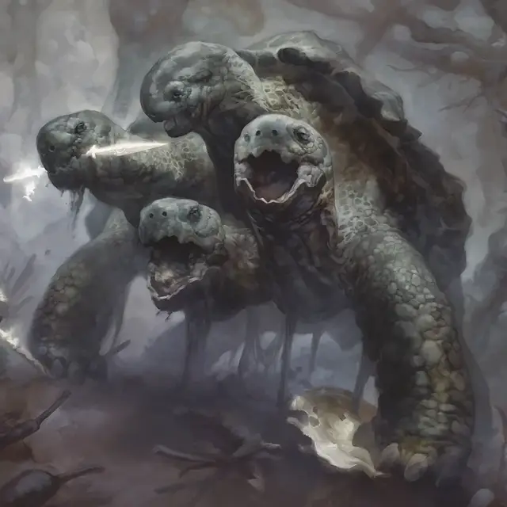

Кусачая гидра
Snapping Hydra
Огромный Монстр, без мировоззрения

Класс Доспеха 20 (природный доспех)
Хиты 149 (13к12 + 65)
Скорость 30 футов, плавая 40 футов
| мод | спас | ||
|---|---|---|---|
| СИЛ | 21 | +5 | +5 |
| ЛОВ | 5 | −3 | −3 |
| ТЕЛ | 21 | +5 | +5 |
| мод | спас | ||
|---|---|---|---|
| ИНТ | 2 | −4 | −4 |
| МДР | 16 | +3 | +3 |
| ХАР | 7 | −2 | −2 |
Навыки Восприятие +11
Иммунитет к состояниям бессознательность, глухота, испуг, ослепление, очарование, ошеломление
Чувства тёмное зрение 60 футов, пассивное Восприятие 21
Опасность 11 (7200 опыта)
Бонус мастерства +4
Особенности
Амфибия. Гидра может дышать и воздухом и под водой.
Многочисленные головы. У гидры пять голов. Если гидра за один ход получает урон 30 или больше, одна из её голов умирает. Если умрут все головы, умирает и гидра.
В конце своего хода она отращивает по две головы за каждую умершую голову с конца её предыдущего хода, если только она не получала за этот период урон огнём. За каждую отращённую голову гидра восстанавливает по 10 хитов.
Реагирующие головы. За каждую голову после первой гидра получает дополнительную Реакцию, которую можно использовать только для совершения провоцированных атак.
Неусыпный. Пока гидра спит, как минимум одна её голова бодрствует.
Действия
Мультиатака. Гидра совершает столько атак Укусом, сколько у нее голов.
Укус. . Рукопашная атака оружием: +9 к попаданию, досягаемость 10 фт., одна цель. Попадание: 14 (2к8 + 5) колющего урона.
Панцирная защита. Гидра втягивает конечности и головы в свой панцирь. Пока оно не появится бонусным действием, оно получает бонус +4 к КД и с преимуществом совершает спасброски Силы и Телосложения. Находясь в панцире, гидра сбита с ног, её скорость равна 0 и не может увеличиться, ее головы не могут умереть, она с помехой совершает спасброски Ловкости и не может совершать никаких других действий или реакций.
Описание
Редкая разновидность гидры, обитающая в дебрях Элдраина, кусачие гидры напоминают гигантских многоголовых черепах. Кусачие гидры обитают на дне крупнейших озер дикой природы или вдоль береговой линии, где дикая природа встречается с океаном. Эти чудовищные существа получили удачное название; их укусы, как известно, разрывают руки великанов пополам.
Кусачие гидры от природы имеют долгую продолжительность жизни и сильный инстинкт самосохранения. Когда кусачая гидра чувствует, что шансы в битве не в ее пользу, она издает хриплый визг и прячется в свой панцирь. В дебрях Элдраина никогда не бывает пусто, поэтому сразу же после визга гидры появляются голодные или любопытные существа и бросаются в бой с врагами гидры, в это время гидра успевает сбежать.